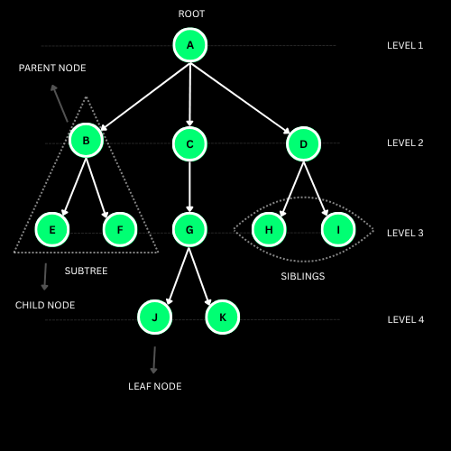
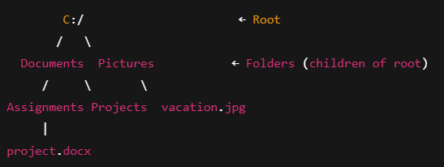
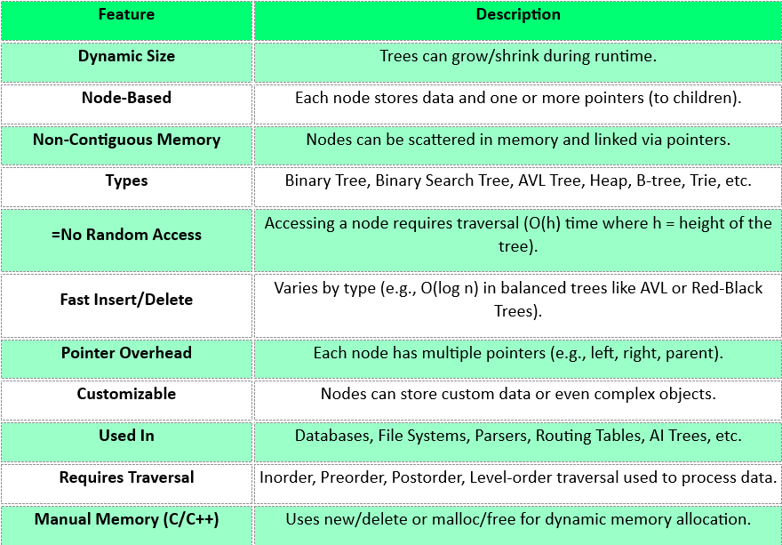
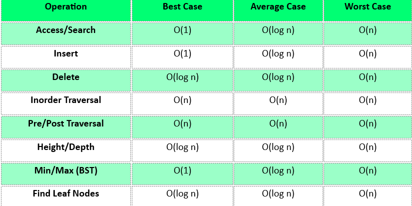

Insertion (BST)
Start at the root and compare: smaller goes left, larger goes right. The first empty slot you reach is where the node is planted. Duplicates are normally ignored.
O(log n)timeO(n)skewed
A hierarchical, non-linear structure where nodes are joined by edges in a parent-child relationship. One root sits at the top and branches extend downwards to the leaves — and because each comparison in a search tree discards a whole subtree, the work per operation is the height, not the size.

Every subtree is itself a tree. Once that clicks, recursion writes most of the code for you.
A tree is an upside-down family tree 🌲: one point at the top, branches spreading downwards, and no branch ever loops back.
Each point is a node. A node can have children (further branches) or none at all — those are the leaves.
You already use trees daily: folders inside folders on your computer, comment threads, an org chart, the HTML of this very page.
The magic version is the binary search tree: keep smaller values left and bigger values right, and every comparison throws away half of what is left to check.
A tree with n nodes has exactly n-1 edges and no cycles. A binary tree allows at most two children per node, named left and right.
A binary search tree (BST) maintains the invariant left subtree < node < right subtree, so search, insert and delete are all O(h) where h is the height.
A balanced tree has h ≈ log₂n, giving O(log n). Insert already-sorted keys into a plain BST and it degenerates into a linked list: h = n, and every operation drops to O(n).
That failure mode is exactly why AVL and Red-Black trees exist: they rotate on insert and delete to keep the height logarithmic no matter what order the keys arrive in.
/) — one single top.project.docx and notes.txt. Files hold data and have no children — they are leaves.
Insert values and watch the descend-and-attach path, run a search to see whole subtrees discarded, then play all four traversals and compare the orders they produce.
Hierarchy, recursion and the height-driven cost model.

From a plain general tree to heaps and tries — eight shapes worth recognising on sight.
All of these are O(h). Keep h ≈ log n and a tree is the best of both worlds: ordered *and* fast.
Start at the root and compare: smaller goes left, larger goes right. The first empty slot you reach is where the node is planted. Duplicates are normally ignored.
Same walk as insert. Each comparison eliminates an entire subtree, so a balanced tree of a million nodes takes about 20 comparisons.
left → node → right. On a BST this emits the keys in sorted order — a free sort just from the shape of the structure.
node → left → right. Root first, so this is what you use to copy or serialise a tree and rebuild it exactly.
left → right → node. Children before the parent, which is the correct order to free a tree or evaluate an expression tree bottom-up.
Sweep one depth at a time using a queue instead of recursion. This is how you print a tree by rows or find the shallowest matching node.
height(node) = 1 + max(height(left), height(right)), with an empty tree at -1. Height counts downwards to the deepest leaf; depth counts upwards to the root.
Keep going left for the minimum, right for the maximum. No comparisons of values needed at all — just follow the structure to the end.
Leaf: detach it. One child: link the parent straight to that child. Two children: copy the in-order successor into the node, then delete the successor instead.
A tree is balanced when every node's subtree heights differ by at most one. AVL and Red-Black trees restore this with rotations after each modification.
Pick an operation, pick a language, copy it out. Your language choice is remembered across every page.
Every bound here is really O(h). Balance is not a nicety — it is the difference between O(log n) and O(n).

The syntax and templates worth keeping open in a second tab. Print this section or grab the full multi-topic sheet.
Every one of these has cost someone an interview. Open each and check yourself.
Eight problems, easy to hard, each with a one-line hint. Try it without the hint first — the hint is for when you are properly stuck, not for when you are impatient.